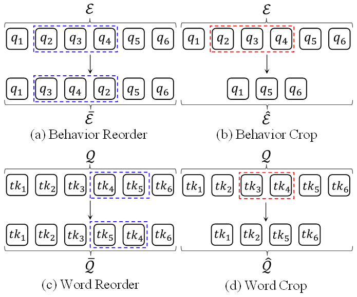
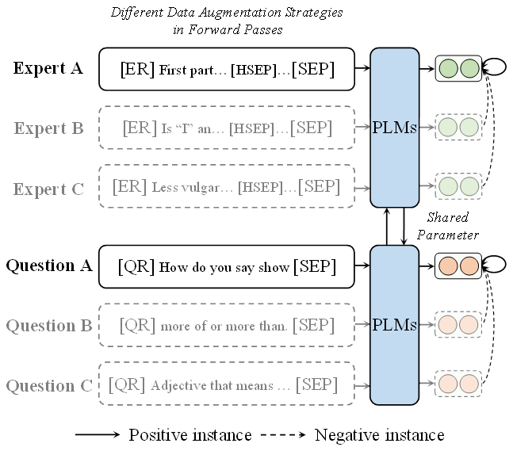
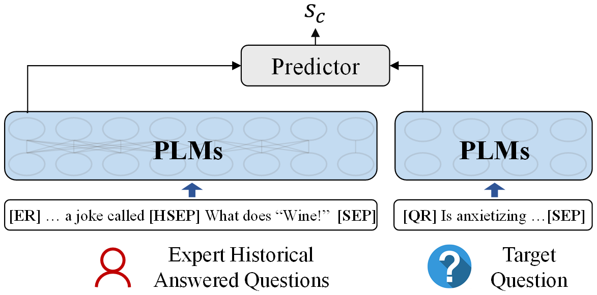
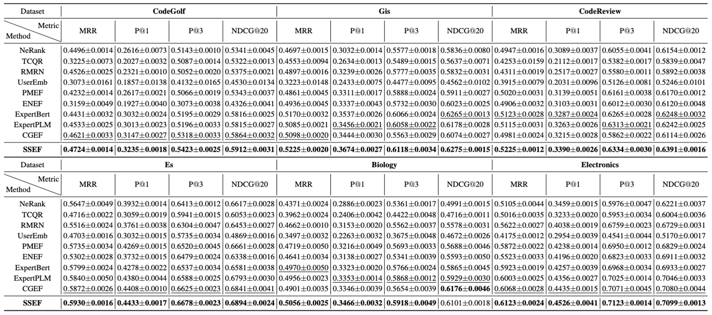
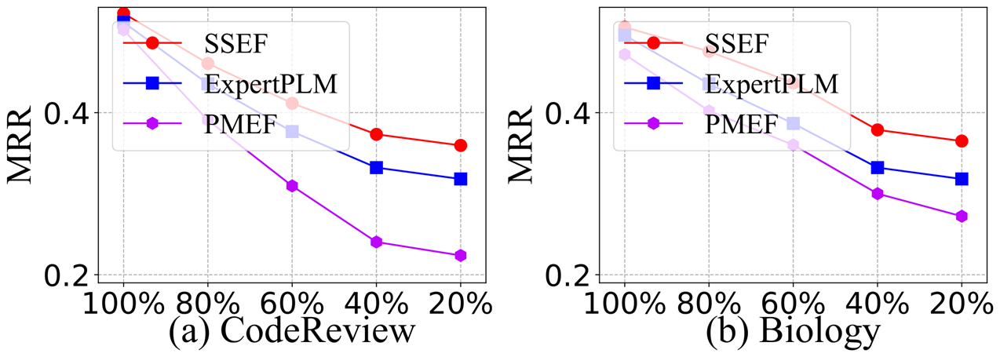
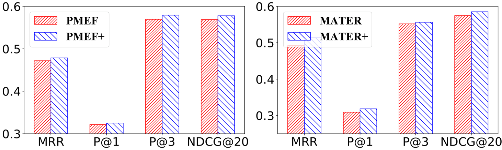
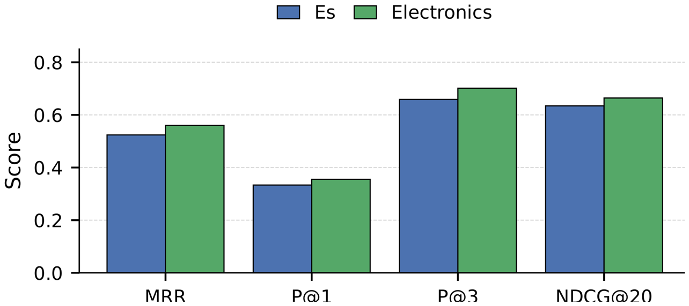
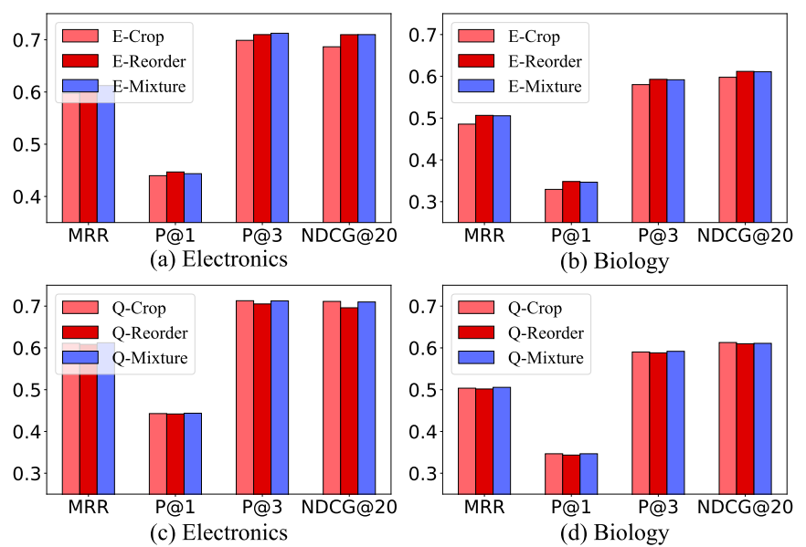
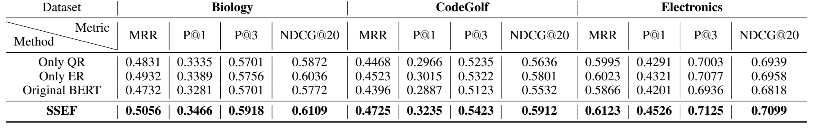

Expert View
从历史回答问题中提取专家表示。
EXPERT FINDING · SELF-SUPERVISED PRE-TRAINING
从无标注问答社区数据联合预训练专家与问题表示
Dual-View Self-Supervised Pre-Training for Expert Finding · IJCAI 2026
01 · MOTIVATION
给定目标问题与候选用户，模型按相关性排列专家。困难在于专家历史与问题语义常被分开建模，而可用于监督训练的专家-问题交互又十分稀疏。
编码当前问题的语义与意图
从历史回答刻画专业知识
为每位候选人计算匹配分数
只强化问题表示会压缩专家历史；只强化专家表示又会弱化目标问题的细粒度语义。
仅依赖已回答关系难以覆盖丰富的专家行为，也限制模型向低资源场景迁移。
SSEF 的思路：先利用大规模无标注 CQA 数据分别构造专家视图和问题视图，再以共享参数联合学习两类表示。
02 · DUAL-VIEW PRE-TRAINING
专家视图串联用户曾回答的问题，问题视图编码目标问题；两侧共享 PLM 参数，并通过不同标记保留视图身份。



SSEF 同时优化专家对比、问题对比与掩码语言建模目标，使共享编码器既学习跨视图知识，又保留各自的结构特征。
03 · FINE-TUNING
下游阶段分别输入候选专家历史与目标问题，将 [ER]、[QR] 表示拼接后预测匹配分数。

从历史回答问题中提取专家表示。
独立编码目标问题的语义表示。
以已采纳回答者为正例，学习候选排序。
04 · EXPERIMENTS
实验从主结果、预训练任务消融、低标注比例、跨模型复用与跨域零样本迁移五个角度验证 SSEF。






05 · CITATION
@inproceedings{zhang2026dual,
title = {Dual-View Self-Supervised Pre-Training for Expert Finding},
author = {Zhang, Mingqiao and Liu, Hongtao and Wang, Yinghui and
Wang, Yumeng and Peng, Qiyao},
booktitle = {Proceedings of the Thirty-Fifth International Joint
Conference on Artificial Intelligence},
pages = {3232--3240},
year = {2026},
doi = {10.24963/ijcai.2026/359}
}